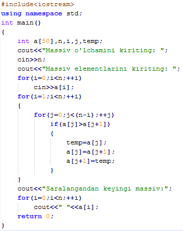
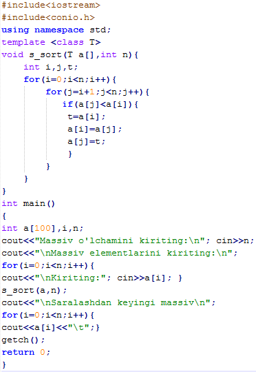
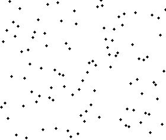
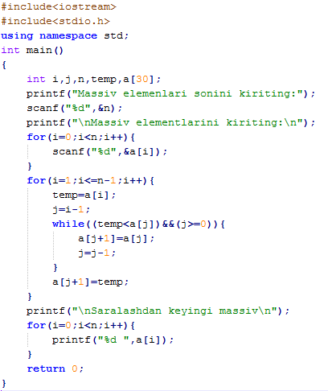
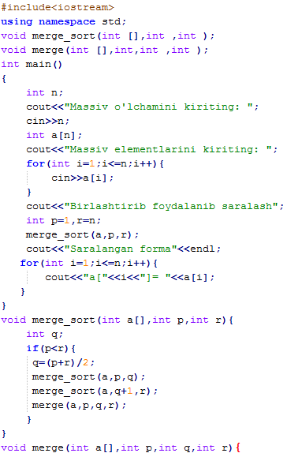
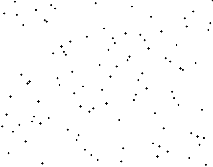
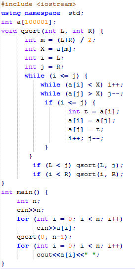

Saralash algoritmlarini o'rgatuvchi elektron qo'llanma
Taqqoslashlar: 200
Taqqoslashlar: 0
Almashishlar: 0
X
X
Hisobotlar
Algoritm Hisoblagich Massiv o'lchami Taqqoslashlar Almashishlar -------------- ----------- --------------- -------------- ------------
Bubble Sort algoritmi haqida ma'lumot.
Algoritmining saralash jarayoni:

| Sinf: | Saralash algoritm |
| Ma'lumotlar tuzilmasi: | Massiv |
| Eng yomon vaqt: | O(n2) |
| Eng yaxshi vaqt: | O(n) |
| O'rtacha vaqt: | O(n2) |
| Xotira sarfi: | O(1) yordamchi |
Algoritmining ishlashining vizual ko'rinishi:

- Agar ikki qo’shni element noto’g’ri tartibda joylashib qolgan bo’lsa, ularning o’rnini almashtiramiz.
- Umumiy n-1 marta jarayon bajariladi. Har safar ikkita qo’shni element taqqoslanadi.
- Elementlar o’z o’rinlariga pufakga o’xshab siljib boradi.
C++ da dastur kodi:
Selection Sort algoritmi haqida ma'lumot.
Algoritmining saralash jarayoni:

| Sinf: | Saralash algoritm |
| Ma'lumotlar tuzilmasi: | Massiv |
| Eng yomon vaqt: | O(n2) |
| Eng yaxshi vaqt: | O(n2) |
| O'rtacha vaqt: | O(n2) |
| Xotira sarfi: | O(n) umumiy O(1) yordamchi |
Algoritmining ishlashining vizual ko'rinishi:

- Har qadamda hali ko’rilmagan elementlar orasidan eng kattasini tanlaymiz.
- Umumiy n-1 marta jarayon bajariladi. Har safar yangi element katta element taqqoslanadi.
- Saralashda katta element aniqlangandan keyin eng oxirgi elementga almashtiriladi.
C++ da dastur kodi:
Insertion Sort algoritmi haqida ma'lumot.
Algoritmining saralash jarayoni:

| Sinf: | Saralash algoritm |
| Ma'lumotlar tuzilmasi: | Massiv |
| Eng yomon vaqt: | O(n2) taqqoslashlar, almashish |
| Eng yaxshi vaqt: | O(n) taqqoslashlar, O(1) almashish |
| O'rtacha vaqt: | O(n2) taqqoslashlar, almashish |
| Xotira sarfi: | O(n) umumiy O(1) yordamchi |
Algoritmining ishlashining vizual ko'rinishi:
- Har qadamda hali ko’rilmagan element saralangan massivdan kerakli joyga joylashtiriladi.
- Umumiy n-1 marta jarayon bajariladi.
- Elementlar har qadamda o'z o'rniga joyshlashtiriladi
C++ da dastur kodi:
Merge Sort algoritmi haqida ma'lumot.
Algoritmining saralash jarayoni:

| Sinf: | Saralash algoritm |
| Ma'lumotlar tuzilmasi: | Massiv |
| Eng yomon vaqt: | O(n log n) |
| Eng yaxshi vaqt: | O(n log n) odatiy |
| O'rtacha vaqt: | O(n log n) |
| Xotira sarfi: | O(n) yordamchi |
Algoritmining ishlashining vizual ko'rinishi:

Bu algoritm Jon fon Neyman tamonidan 1946 yilda taklif qilingan. Jon Fon Neyman Vengriyalik matematika, kvant fizikasi, funksional analiz, to’plamlar nazariyasi, ekonomika, informatika kabi fanlarga munosib hissa qo’shgan.
- Algoritmlarni qurishning asosiy metodlaridan biri.
- Murakkab masalani yechish uchun, uni oddiyroq bo’laklarga ajratish kerak.
- Massivni ham huddi shunday saralash mumkin:
- Uni ikkita bo’lakga ajratamiz.
- Bo’laklarni alohida saralaymiz.
- Saralangan massivlarni birlashtiramiz.
- Ikkita saralangan massiv berilgan. Ularni birlashtirib shunday massiv hosil qilish qilish kerakki, u yana saralangan bo’lsin.
- Xar safar hali ikki massivning hali ko’rilmagan qismlaridagi birinchi ikki elementni taqqoslaymiz. Ulardan kichigini olamiz.
C++ da dastur kodi:
Quick Sort algoritmi haqida ma'lumot.
Algoritmining saralash jarayoni:

| Sinf: | Saralash algoritm |
| Ma'lumotlar tuzilmasi: | Massiv |
| Eng yomon vaqt: | O(n2) |
| Eng yaxshi vaqt: | O(n log n) oddiy bo'laklash yoki O(n) 3 bo'lakka bo'laklash |
| O'rtacha vaqt: | O(n log n) |
| Xotira sarfi: | O(n) yordamchi, O(n log n) yordamchi |
Algoritmining ishlashining vizual ko'rinishi:
Bu algoritm Charlz Hoar tamonidan 1964 yilda taklif qilingan. Charlz Hoar ingliz olimi, informatika va hisoblash texnikasi sohasida yetuk mutaxassis. Uning “Tezkor saralash” algoritmi saralash bo’yicha eng ommobop algoritm.
- Bu algoritm ham “Bo’lib tashla va hukmronlik qil” metodiga asoslanadi.
- Massivda bo’luvchi element X tanlanadi.
- Elementlarni shunday joylashtiramizki, dastlab X dan kichik yoki teng bo’lgan elementlar joylashsin, keyin undan katta bo’lgan elementlar joylashsin.
- Keyin ularni alohida saralaymiz.
C++ da dastur kodi:
Saralash algoritmlari bo'yicha video lavhalar.
Bubble Sort Algoritmi
Quick Sort Algoritmi
Bubble Sort VS Quick Sort
Merge Sort Algoritmi
Merge Sort VS Quick Sort